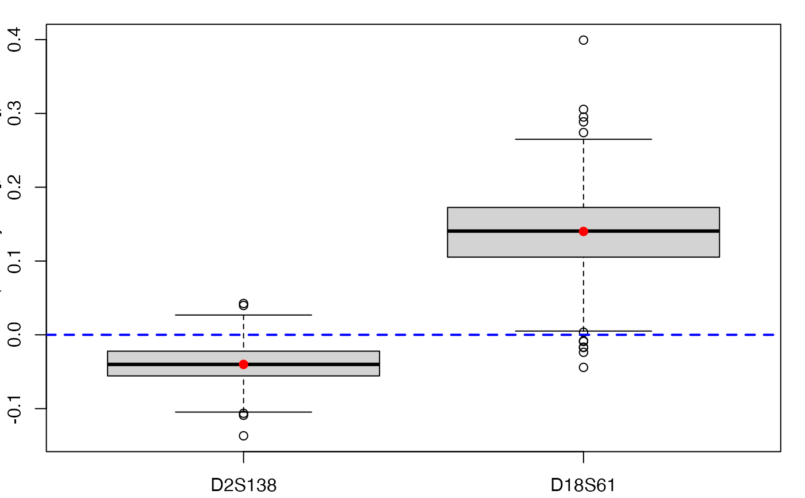
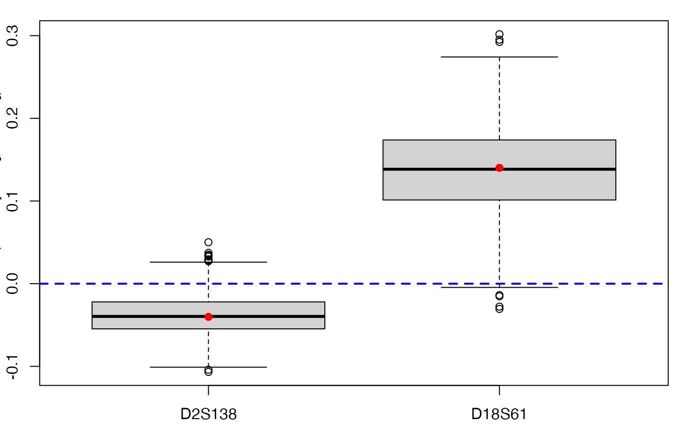
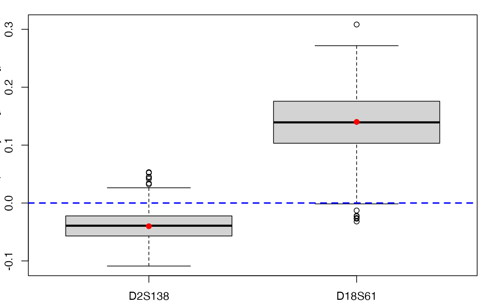
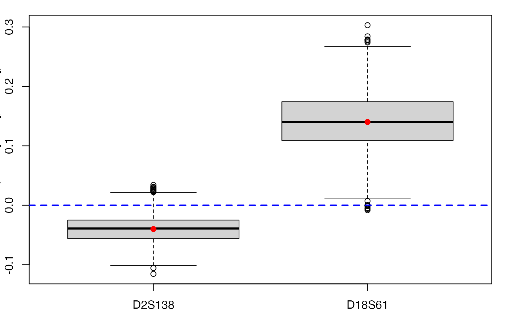

tilt.bootplsglm.RdProvides a wrapper for the bootstrap function tilt.boot from the boot R package.
Implements non-parametric tilted bootstrap for PLS generalized linear regression models by case resampling : the tilt.boot function will run an initial bootstrap with equal resampling probabilities (if required) and will use the output of the initial run to find resampling probabilities which put the value of the statistic at required values. It then runs an importance resampling bootstrap using the calculated probabilities as the resampling distribution.
tilt.bootplsglm(object, typeboot="fmodel_np", statistic=coefs.plsRglm, R=c(499, 250, 250), alpha=c(0.025, 0.975), sim="ordinary", stype="i", index=1, stabvalue=1e6,...)
| object | An object of class |
|---|---|
| typeboot | The type of bootstrap. Either (Y,X) boostrap ( |
| statistic | A function which when applied to data returns a vector containing the statistic(s) of interest. |
| R | The number of bootstrap replicates. Usually this will be a single positive integer. For importance resampling, some resamples may use one set of weights and others use a different set of weights. In this case |
| alpha | The alpha level to which tilting is required. This parameter is ignored if |
| sim | A character string indicating the type of simulation required. Possible values are |
| stype | A character string indicating what the second argument of |
| index | The index of the statistic of interest in the output from |
| stabvalue | Upper bound for the absolute value of the coefficients. |
| … | ny further arguments can be passed to |
An object of class "boot".
data(aze_compl) Xaze_compl<-aze_compl[,2:34] yaze_compl<-aze_compl$y dataset <- cbind(y=yaze_compl,Xaze_compl) # Lazraq-Cleroux PLS bootstrap Classic aze_compl.tilt.boot <- tilt.bootplsglm(plsRglm(yaze_compl,Xaze_compl,3, modele="pls-glm-logistic", family=NULL), statistic=coefs.plsRglm, R=c(499, 100, 100), alpha=c(0.025, 0.975), sim="ordinary", stype="i", index=1)#> ____************************************************____ #> #> Family: binomial #> Link function: logit #> #> ____Component____ 1 ____ #> ____Component____ 2 ____ #> ____Component____ 3 ____ #> ____Predicting X without NA neither in X nor in Y____ #> ****________________________________________________**** #>aze_compl.tilt.boot2 <- tilt.bootplsglm(plsRglm(yaze_compl,Xaze_compl,3, modele="pls-glm-logistic"), statistic=coefs.plsRglm, R=c(499, 100, 100), alpha=c(0.025, 0.975), sim="ordinary", stype="i", index=1)#> ____************************************************____ #> #> Family: binomial #> Link function: logit #> #> ____Component____ 1 ____ #> ____Component____ 2 ____ #> ____Component____ 3 ____ #> ____Predicting X without NA neither in X nor in Y____ #> ****________________________________________________**** #>aze_compl.tilt.boot3 <- tilt.bootplsglm(plsRglm(yaze_compl,Xaze_compl,3, modele="pls-glm-family", family=binomial), statistic=coefs.plsRglm, R=c(499, 100, 100), alpha=c(0.025, 0.975), sim="ordinary", stype="i", index=1)#> ____************************************************____ #> #> Family: binomial #> Link function: logit #> #> ____Component____ 1 ____ #> ____Component____ 2 ____ #> ____Component____ 3 ____ #> ____Predicting X without NA neither in X nor in Y____ #> ****________________________________________________**** #># PLS bootstrap balanced aze_compl.tilt.boot4 <- tilt.bootplsglm(plsRglm(yaze_compl,Xaze_compl,3, modele="pls-glm-logistic"), statistic=coefs.plsRglm, R=c(499, 100, 100), alpha=c(0.025, 0.975), sim="balanced", stype="i", index=1)#> ____************************************************____ #> #> Family: binomial #> Link function: logit #> #> ____Component____ 1 ____ #> ____Component____ 2 ____ #> ____Component____ 3 ____ #> ____Predicting X without NA neither in X nor in Y____ #> ****________________________________________________**** #>